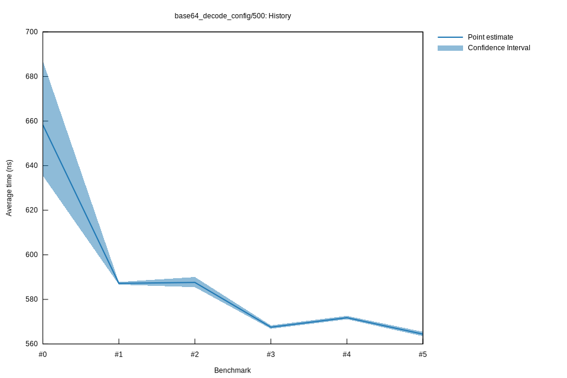

# 52022-10-16T20:09:38+03:00
|
Lower Bound |
Estimate |
Upper Bound |
| Value: |
563.48ns |
564.42ns |
565.45ns |
| Throughput: |
1130.57MiB/s |
1128.70MiB/s |
1126.63MiB/s |
| Change in Value: |
-1.7585% |
-1.4743% |
-1.1723% |
| Change in Throughput: |
+1.7900% |
+1.4963% |
+1.1862% |
No change in performance detected.
# 42022-10-16T17:28:43+03:00
|
Lower Bound |
Estimate |
Upper Bound |
| Value: |
571.10ns |
571.80ns |
572.60ns |
| Throughput: |
1115.49MiB/s |
1114.13MiB/s |
1112.56MiB/s |
| Change in Value: |
+0.6544% |
+0.9138% |
+1.1739% |
| Change in Throughput: |
-0.6501% |
-0.9055% |
-1.1603% |
No change in performance detected.
# 32022-10-15T17:19:24+03:00
|
Lower Bound |
Estimate |
Upper Bound |
| Value: |
566.82ns |
567.54ns |
568.36ns |
| Throughput: |
1123.92MiB/s |
1122.48MiB/s |
1120.87MiB/s |
| Change in Value: |
-3.8300% |
-3.2590% |
-2.7951% |
| Change in Throughput: |
+3.9825% |
+3.3688% |
+2.8754% |
No change in performance detected.
# 22022-10-15T16:53:37+03:00
|
Lower Bound |
Estimate |
Upper Bound |
| Value: |
585.48ns |
587.61ns |
590.04ns |
| Throughput: |
1088.09MiB/s |
1084.15MiB/s |
1079.68MiB/s |
| Change in Value: |
-0.5207% |
-0.0567% |
+0.5194% |
| Change in Throughput: |
+0.5234% |
+0.0568% |
-0.5167% |
Change within noise threshold.
# 12022-10-08T17:30:24+03:00
|
Lower Bound |
Estimate |
Upper Bound |
| Value: |
586.65ns |
587.19ns |
587.78ns |
| Throughput: |
1085.92MiB/s |
1084.92MiB/s |
1083.83MiB/s |
| Change in Value: |
-10.303% |
-7.9095% |
-5.8230% |
| Change in Throughput: |
+11.487% |
+8.5888% |
+6.1830% |
No change in performance detected.
# 02022-10-08T17:11:08+03:00
|
Lower Bound |
Estimate |
Upper Bound |
| Value: |
635.48ns |
658.30ns |
686.95ns |
| Throughput: |
1002.48MiB/s |
967.72MiB/s |
927.37MiB/s |